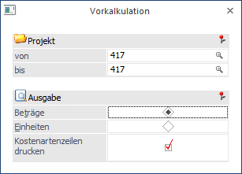
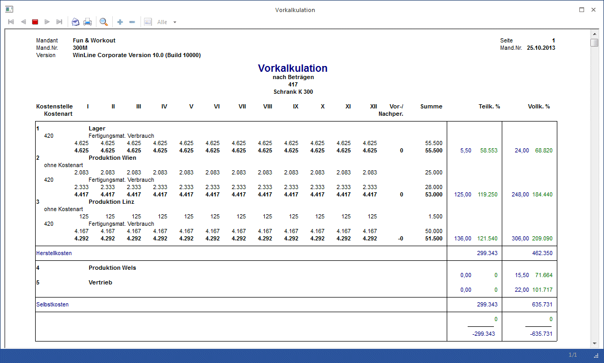

Im Menüpunkt
1 Auswertungen
1 Vorkalkulation
rufen Sie den Ausdruck der Kostenträgerbudgetierung ab, den Sie unter Stammdaten / Kostenträger/ Projekt / Register Budget zuvor eingegeben haben.

Ø Projekt
Eingabe der Kostenträgernummer. Es wird geprüft, ob der Benutzer die Berechtigung hat (WinLine KORE/Stammdaten/Kostenträger), den eingegebenen Kostenträger zu verwenden.
Ø Beträge
Vergleichsbasis sind die Beträge. Die Auswertung enthält die Plansummen pro Monat des laufenden Wirtschaftsjahres, evtl. Vor-/Nachperioden und eine Gesamtsumme. Anhand der Budget-Teilkosten, bzw. Vollkostenprozentsätze, die im Kostenstellenstamm hinterlegt wurden, werden die geplanten Teil- bzw. Vollkosten errechnet.
Ø Einheiten
Auswertebasis sind die geplanten Einheiten. Die Auswertung erfolgt pro Monat des aktuellen Wirtschaftsjahres, Vor-/Nachperioden in einer Gesamtsumme. Zusätzlich werden als Betrag die geplanten Teil- und Vollkosten dargestellt.
ü Kostenartenzeilen drucken
Pro Kostenstelle werden die budgetierten Kostenartensummen ausgewiesen. Diese Option wird standardmäßig vorgeschlagen.
Nach Bestätigen mit dem Ausgabe Button oder F5 wird die Vorkalkulation abgerufen.
Die Werte der Vorkalkulation können jederzeit im Menüpunkt
1 Stammdaten
1 Kostenträger/Projekt
1 Register Budget
überarbeitet und korrigiert werden.
